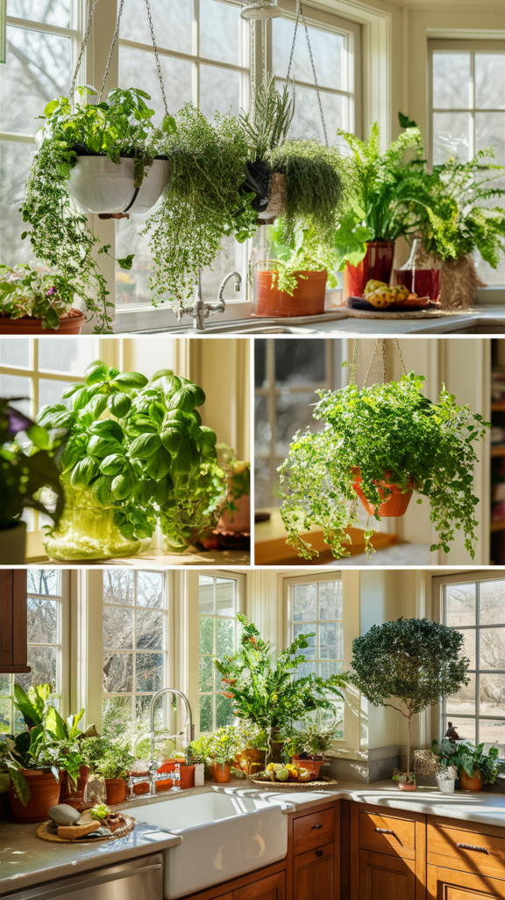
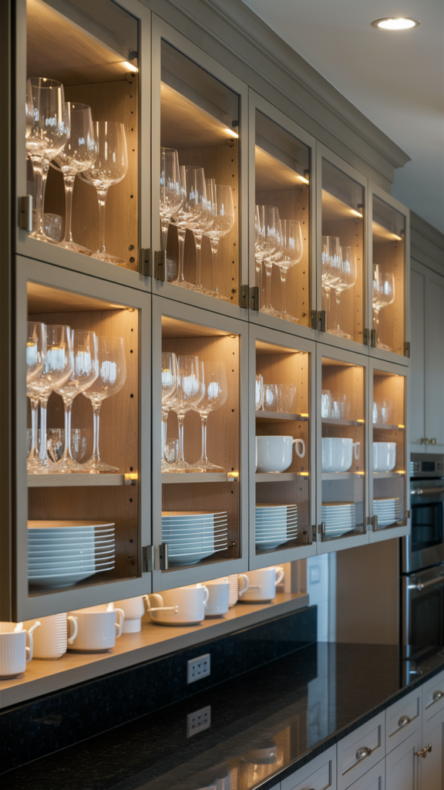
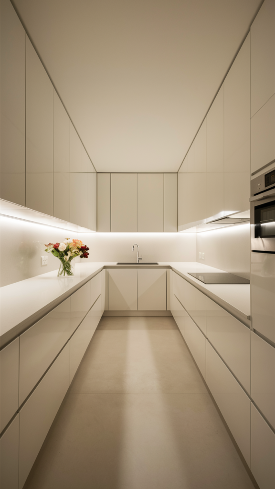
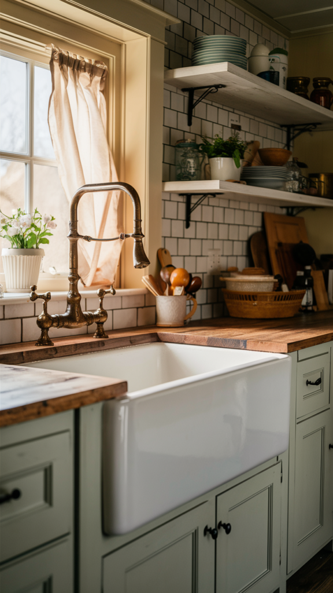
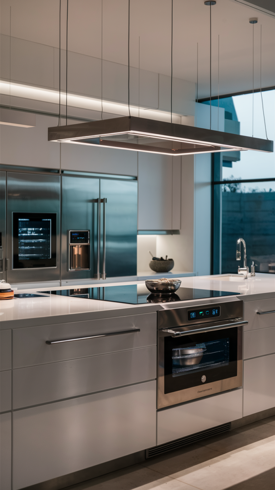
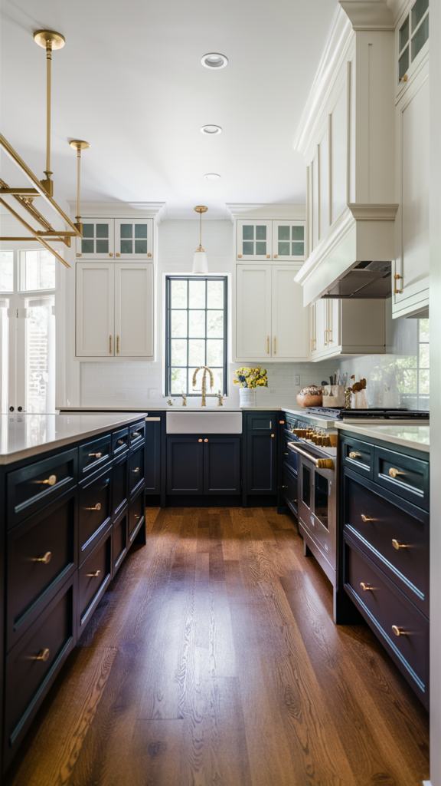
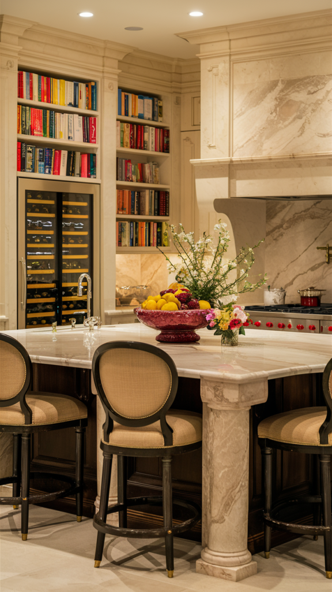
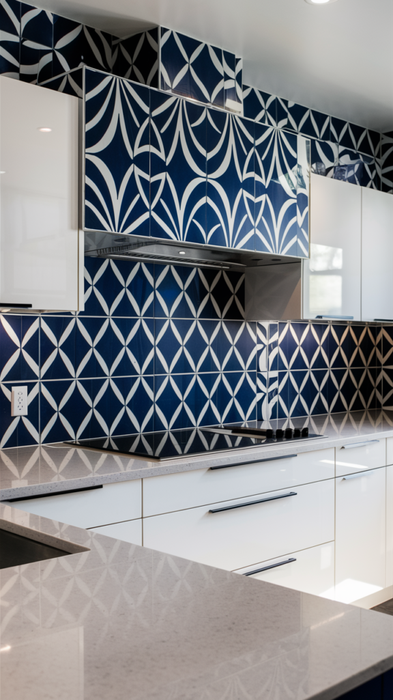
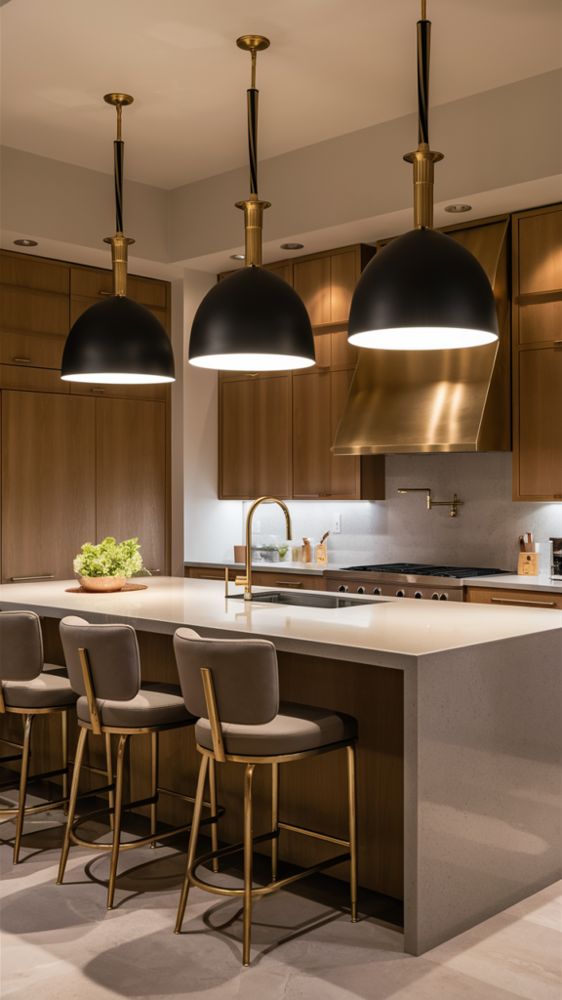
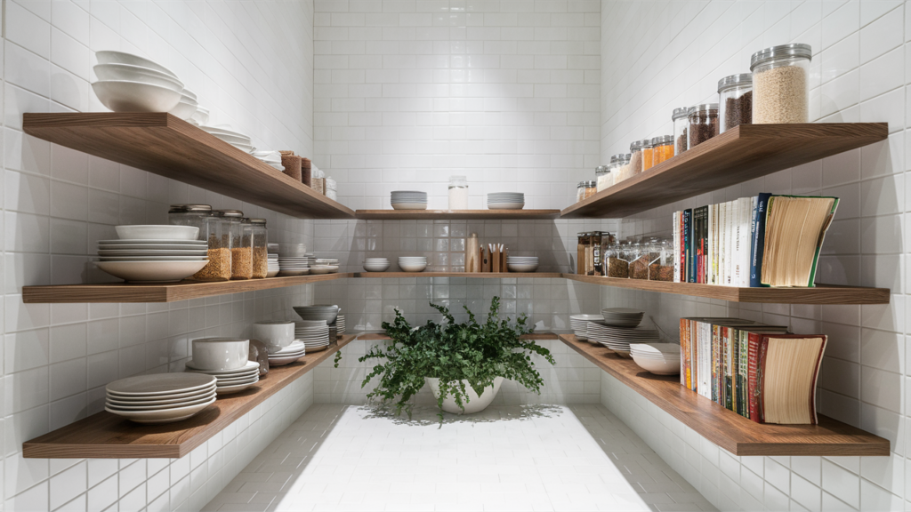

Not every kitchen upgrade pays off the same way.
Some genuinely add lasting value to a home. Others are purely cosmetic, trend-bound, and worth doing only for personal enjoyment right now.
Worth knowing which is which before spending real money on either kind.
Here's an honest read on ten common kitchen updates.

1. Green Accents and Plants
A few plants or a pop of green through small decor items cost almost nothing and carry essentially no risk.
This is purely additive, easy to remove, change, or scale up without touching the kitchen's actual bones.
Worth doing regardless of budget, since the downside is close to zero.
The safest, lowest-cost item on this entire list.

2. Glass Cabinet Doors
Glass-front cabinets show off dishware and add visual depth to upper cabinetry.
This requires real upkeep, what's visible needs to stay organized and presentable at all times.
A moderate-risk trend, since not every buyer wants the maintenance commitment that comes with it.
Worth trying on just one or two cabinets rather than the whole upper row, to limit both cost and risk.

3. A Minimalist Overhaul
Stripping a kitchen down to clean lines and minimal visible clutter photographs beautifully and appeals broadly to buyers.
This is less a trend than a genuine, lasting design approach, it rarely reads as dated the way a bolder style choice can.
Worth adopting with confidence, since it's one of the safer long-term bets here.
The discipline required to maintain it day to day is the real cost, not the aesthetic risk.

4. A Farmhouse Sink
A farmhouse sink is both a style statement and a genuinely practical upgrade, more basin space, easier cleanup of large pots and pans.
This has held steady appeal for years rather than cycling quickly in and out of fashion.
Worth the investment, since it functions well regardless of whatever else is currently trending.
One of the more durable choices on this list, both practically and stylistically.

5. Smart Appliances
Connected appliances add genuine daily convenience, but the technology itself ages faster than the kitchen around it.
This is more about function than resale value, a smart fridge rarely moves a sale price the way a renovated layout does.
Worth it for personal use, with the expectation the tech itself will need updating again within several years.
Treat this as a convenience purchase, not an investment.

6. Two-Tone Cabinets
Mixing two cabinet colors or finishes is a current trend that adds visual interest without a full kitchen overhaul.
This carries moderate risk, tastes in color pairing shift faster than tastes in cabinet style itself.
A safer version uses two closely related tones rather than a stark contrast, which ages better over time.
Worth trying on lower cabinets only, keeping upper cabinets neutral, to limit the long-term risk.

7. A Multi-Functional Island
An island that adds seating, storage, and workspace genuinely increases a kitchen's functional value, not just its looks.
This consistently ranks among the highest-value kitchen investments, trend or not.
Buyers across most tastes respond well to added counter space and seating.
One of the safest bets on this entire list.

8. Bold Backsplashes
A dramatic tile backsplash adds personality, but personality is exactly what future buyers may not share.
This is one of the riskier trend items on the list, bold and specific tastes don't always translate to resale value.
Worth it for genuine enjoyment now, with the understanding it might need replacing before a sale.
A neutral backsplash with one bold accent area balances the risk better than going bold everywhere at once.

9. Statement Lighting
A standout fixture over an island or dining area adds real visual impact for a relatively modest cost.
Lighting tends to hold its appeal better than most trends, since it rarely looks dated the way a color choice can.
This is one of the better value-to-cost upgrades on this list, especially if installed professionally.
A reasonable splurge that photographs well and functions well too.

10. Open Shelving
Open shelving looks airy and current in photos, but it's genuinely polarizing among buyers and appraisers alike.
Some see it as stylish and intentional. Others see it as impractical, dust-prone storage.
This is a cosmetic trend more than a value-adding change, worth doing for personal enjoyment, not resale.
Easy and cheap to reverse if tastes change, which makes it a low-risk experiment either way.

A Few Quick Answers
A full kitchen decor refresh every few years keeps the space current without needing a full renovation each time.
Mixing metals works fine in moderation, one dominant finish with a secondary accent, rather than three or four competing tones.
Making a small kitchen feel larger leans on light colors, minimal clutter, and one strong focal point rather than more furniture.
Updating a kitchen without a full remodel usually comes down to lighting, hardware, and a few smaller styling changes, the items on this list that don't require any actual construction work.
Final Thoughts
The multi-functional island and farmhouse sink are the safest investments on this list, genuine, lasting value regardless of trend cycles.
Bold backsplashes and two-tone cabinets carry more risk, worth doing for enjoyment now rather than resale later.
Green accents and statement lighting round out the list as low-risk, high-reward additions.
Spend where the value genuinely lasts, and treat the riskier trends as choices for everyday comfort right now, not equity for tomorrow.